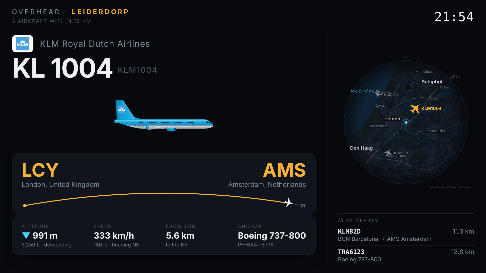
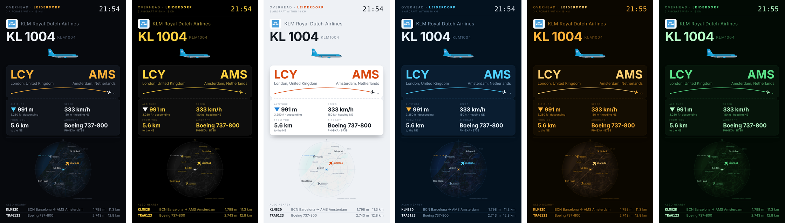
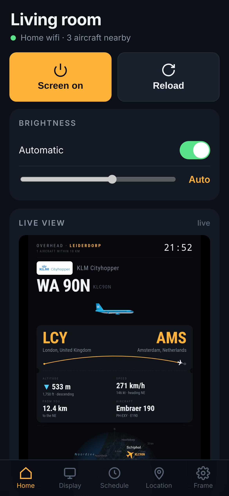
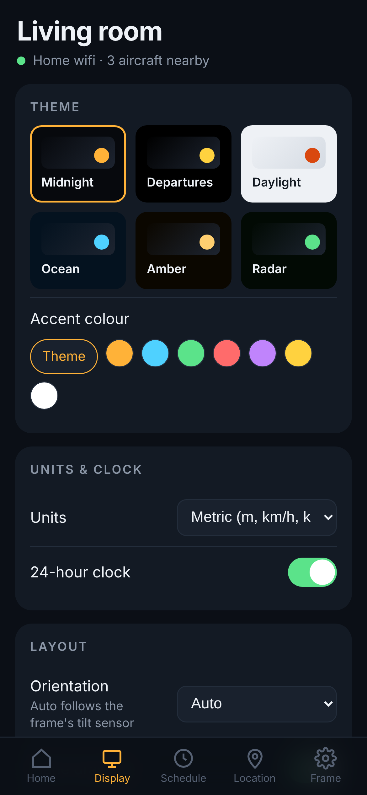
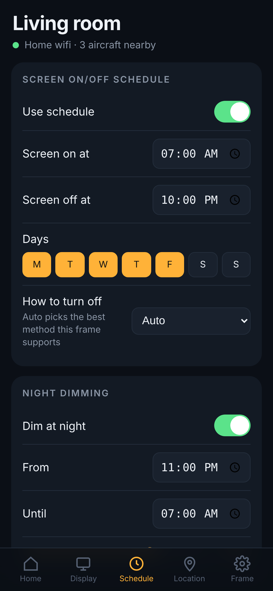
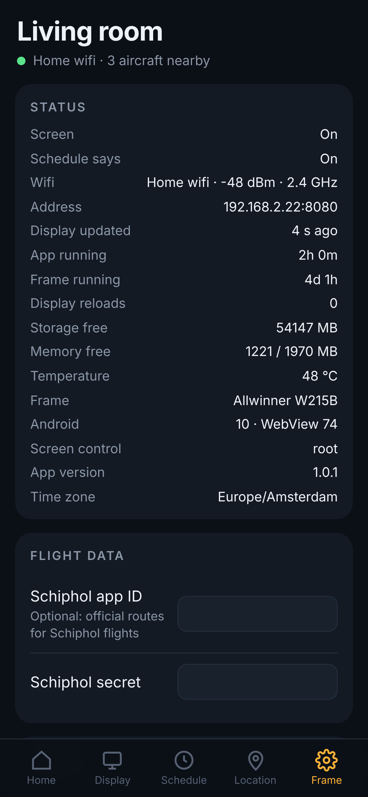

Flight Frame turns a cheap Android photo frame into a live flight display: airline, route, aircraft and a radar map of the sky around you. Free, open source, no subscriptions.

Look up when you hear a plane, then glance at the frame.
Each plane is drawn to scale for its type, from an ATR to an A380, in the airline's colours with its logo on the tail. Coastguard, military, police and medical flights get their own badges.
Origin and destination with city and country, and an arc showing how far along the flight is. Routes are cross-checked against the plane's live position, plus Schiphol's official schedule if you like.
Every plane nearby on a dark map of your area: coastline, lakes, motorways, runways and town names. Generate the map for any location.
When nothing is overhead: big clock, current weather, a 24-hour rain chart, sunrise and sunset, and when you can see the space station.
A screen schedule per weekday, night dimming, and a frame app that starts on boot and quietly restarts the display if anything ever hangs.
Six themes and accent colours, metric/imperial/aviation units, 12 or 24-hour clock, portrait or landscape (it follows the frame's tilt sensor), range and altitude filters.
Midnight, Departures, Daylight, Ocean, Amber and Radar — the map recolours itself to match.

Open the frame's address on your phone and add it to your home screen. No app store, no account — it only works on your own wifi, with an optional PIN.




Screen on/off, brightness, reload, a live view of what the frame shows, and the flights overhead right now.
Theme, accent, units, clock, orientation, which panels to show, how many flights, which plane to feature, range and altitude filters.
Screen on/off times per weekday and night dimming. Turning it off from the phone sticks until the next scheduled change.
Wifi signal, temperature, memory, uptime, logs; update the display, back up and restore settings, change location, upload a new map.
You need a frame that runs full Android and allows a developer (ADB) connection. Flight Frame replaces the frame's own photo app.
| Frame | Status | Notes |
|---|---|---|
| Arktronic AK-W215B 21.5", 1920×1080 | Tested | Works fully, including real screen sleep. The project was built on this one. |
| Frameo frames (Denver, Aeezo, …) | Likely | Settings → About → Beta program → ADB access. Older ones may need a WebView update first. |
| Android tablets | Works | Android 5 or newer. Put it in a frame or on a stand. |
| Nixplay, Aura, Meural, Echo Show, Nest Hub | No | Locked down: no developer access. |
# Mac / Linux bash install.sh 192.168.1.50 # Windows (PowerShell) powershell -ExecutionPolicy Bypass -File install.ps1 192.168.1.50 # Radar map for your location pip install mapbox-vector-tile pillow python3 make_map.py --lat 40.7128 --lon -74.006 --out mymap
No subscriptions. Flight Frame combines open sources and checks them against each other.